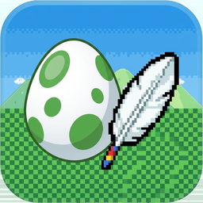
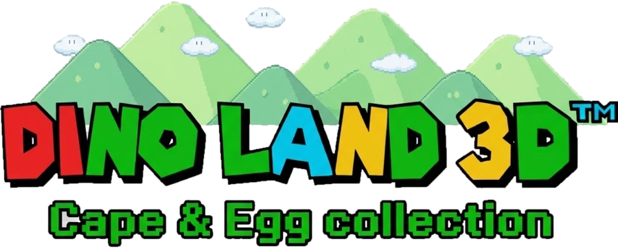
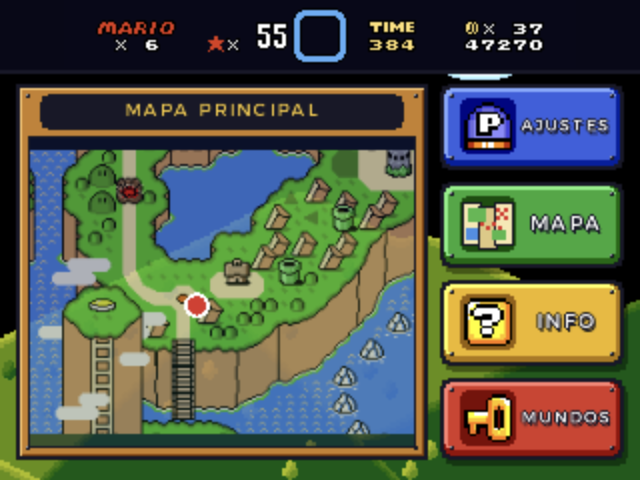
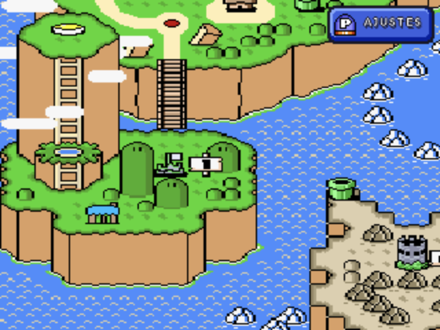
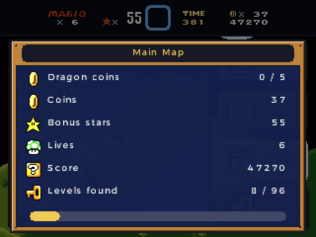
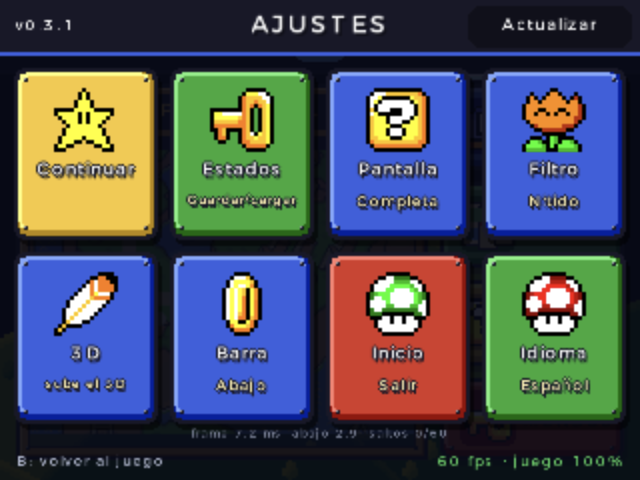
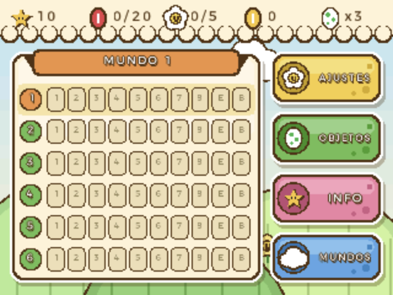
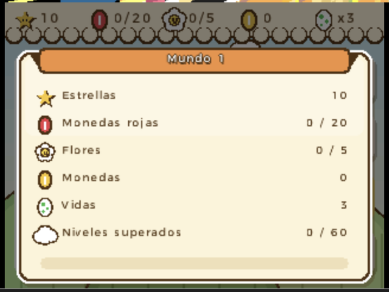
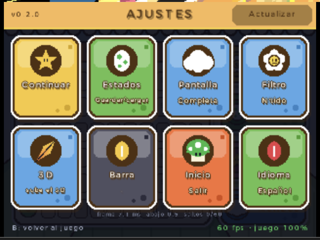
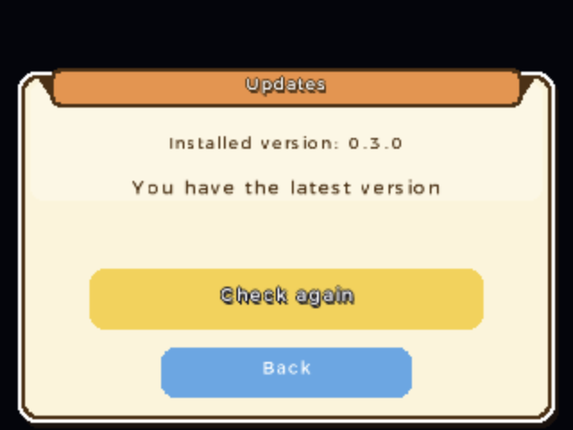

✋
Pantalla táctil viva
Contadores, progreso por mundo, mapa, inventario y ajustes siempre a un toque, con el estilo de cada juego.

Dino Land 3D
Dos clásicos de plataformas de 16 bits en tu Nintendo 3DS: la pantalla táctil se convierte en un panel vivo y el 3D separa el escenario en capas.
Necesitas tus propias copias de los cartuchos. Aquí no se distribuye ninguna ROM.
No es solo un emulador con un menú: cada pantalla está pensada para jugar en la 3DS.
Contadores, progreso por mundo, mapa, inventario y ajustes siempre a un toque, con el estilo de cada juego.
Con el deslizador, el fondo se va hacia atrás, el escenario queda en la pantalla y los personajes salen hacia ti.
La barra original se muda a la pantalla táctil: arriba queda la imagen del juego completa, sin nada encima.
El fondo del nivel en el que estás se ve detrás del panel táctil y se mueve con la cámara.
Elige tu partida tocándola: la app recorre el menú del juego por ti.
Tres ranuras por juego con miniatura y fecha, para guardar y volver en cualquier momento.
Con Wi-Fi avisa cuando hay versión nueva y se instala con un toque, sin sacar la SD.
Toda la interfaz en los dos idiomas; se cambia desde Ajustes y se recuerda.
Emulación por GPU a 60 fps; la interfaz se dibuja una vez y se reutiliza para no robarle tiempo al juego.
Capturas reales de la pantalla inferior.








Dino Land 3D es gratis y lo seguirá siendo. Si te gusta y quieres invitarme un café, se agradece muchísimo. ☕
Invítame un café en Ko-fiUna 3DS, 2DS o New 3DS con Luma3DS. Si aún no lo tienes, sigue 3ds.hacks.guide.
Instala DinoLand3D.cia con FBI (recomendado: se abre desde el menú HOME) o copia DinoLand3D.3dsx a la carpeta /3ds/ de la SD para abrirla desde el Homebrew Launcher.
DinoLand3D.ciaCon la consola conectada a internet, abre FBI → Remote Install → Scan QR Code y escanea este código. FBI descarga e instala la versión más reciente; después, la app se actualiza sola.
Haz el volcado de tus cartuchos (versión de EE. UU.) y cópialos como Super.sfc (el de 1990) y Super2.sfc (el de 1995). También valen .smc o sin extensión, con o sin cabecera de 512 bytes.
Super.sfc · 512 KB6b47bb75d16514b6a476aa0c73a683a2a4c18765
Super2.sfc · 2 MBc807f2856f44fb84326fac5b462340dcdd0471f8
Abre Dino Land 3D desde el menú HOME (o el Homebrew Launcher) y elige tu juego.
sd:/
└── 3ds/
├── DinoLand3D.3dsx ← solo si usas el .3dsx
└── DinoLand3D/
├── Super.sfc
├── Super2.sfc
├── saves/ ← partidas (se crean solas)
└── savestates/ ← estados de guardado
Las últimas versiones publicadas. La app te avisa sola cuando sale una nueva.
Cargando versiones…
No. Solo es la aplicación; necesitas los volcados de tus propios cartuchos. Sin ROMs, la app te dice dónde ponerlas.
Sí, es la consola de referencia. El juego de 1990 va a 60 fps. El de 1995 usa un chip especial del cartucho y en escenas con muchos objetos rotando o escalando puede bajar en una Old 3DS; en una New 3DS va completo.
Sube el deslizador 3D durante el juego. En Ajustes → 3D puedes apagarlo del todo si prefieres más rendimiento. Con el deslizador abajo no cuesta nada.
En sd:/3ds/DinoLand3D/saves/. Se guardan al pausar, al ir al menú HOME y al salir. Los estados de guardado están en savestates/.
Con Wi-Fi, la app busca sola al abrirse y te avisa en el menú de juegos; también puedes buscar a mano en Ajustes → Actualizar. Si la instalaste como CIA se reinicia sola ya actualizada; con el .3dsx, ciérrala y vuelve a abrirla. También puedes volver a escanear el QR.
A tu consola le falta el firmware de audio (/3ds/dspfirm.cdc); casi siempre ya está porque la guía lo crea al final. Para crearlo: abre el menú de Luma con L + ↓ + SELECT → Miscellaneous options → Dump DSP firmware, y vuelve a abrir la app.
Sí: Ajustes → Idioma cambia entre español e inglés al momento.